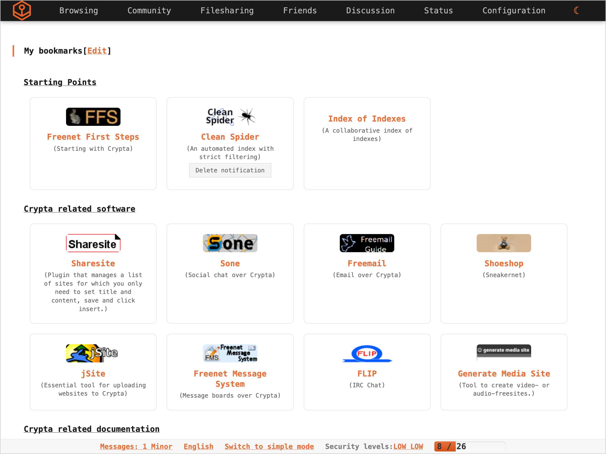

User experience first
- Modern web UI and sensible defaults.
- One‑click guided onboarding (smart opennet bootstrap).
- Optional darknet linking later.
Crypta is a modern fork of Hyphanet/Freenet that provides a peer‑to‑peer, encrypted, censorship‑resistant datastore on top of which forums, chats, micro‑blogs, and websites can run without central servers.
Crypta preserves Hyphanet/Freenet’s privacy model while modernizing usability, performance, and the developer experience.

Packages are available for Windows, macOS, and Linux. The launcher starts the daemon and opens the UI on first start.
Desktops: Ubuntu → Snap; other distros → Flatpak. Servers: prefer native packages (.deb for Debian/Ubuntu; .rpm for Fedora/RHEL/openSUSE).
sudo apt install ./Crypta-version_amd64.debsudo dnf install ./Crypta-version.x86_64.rpmsudo systemctl start cryptad./gradlew assembleCryptadDistbuild/cryptad-dist/bin/cryptad-launcher (Windows: *.bat).http://localhost:<port>/ on first successful start.Use the included Gradle Wrapper. If you trust the committed wrapper, you can build immediately.
./gradlew buildJar — builds the node JAR../gradlew --parallel test — run tests in parallel../gradlew assembleCryptadDist — assemble portable dist../gradlew distJlinkCryptad — create a minimal runtime image../gradlew build — builds app image; native installers when tooling present (DMG/DEB/RPM).Crypta is free software licensed under the GNU General Public License, version 3 only. Some bundled components may use permissive licenses (e.g., Apache‑2.0, BSD‑3‑Clause) that are compatible with GPLv3 and are included under their respective terms.
For the full legal text, see the project’s LICENSE file.